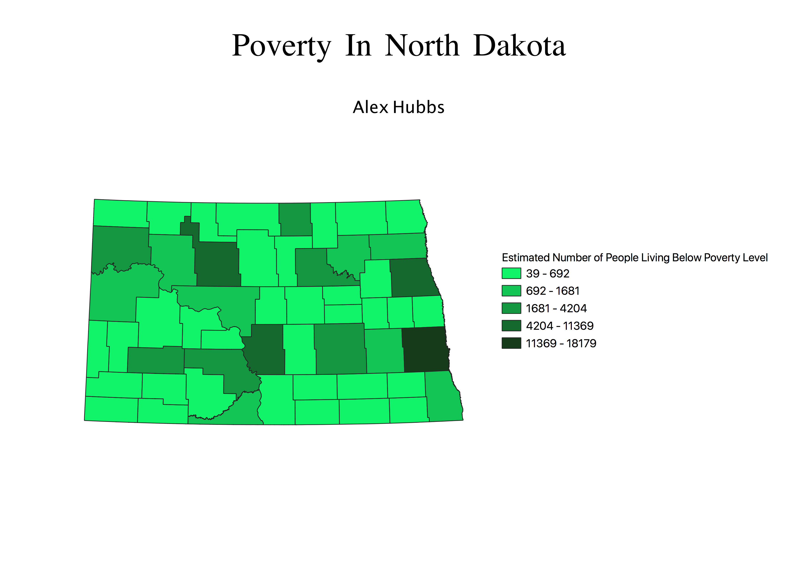

Homework 7: Census data choropleth
Alex Hubbs
This map shows an estimation of the number of people living in poverty in each county in North Dakota.

Data used for this project
CSV dataset
Link to shapefile